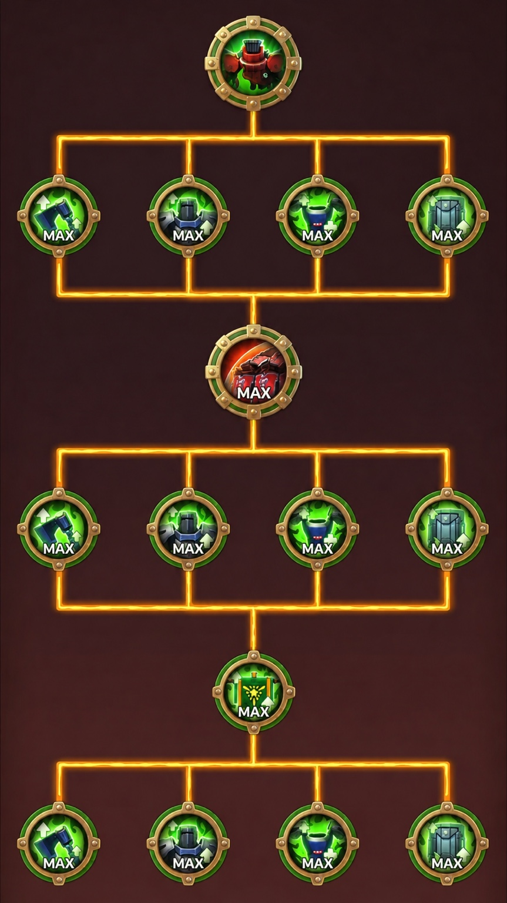

1. 大まかな目標を選択
まずは大枠3つから選びます。詳細設定をしない場合は、1兵種・2兵種・3兵種の必要数をすぐ確認できます。
2. ざっくり結果
目標ごとの必要素材です。兵種数で自動変動します。
3. 現在地をワンタッチ設定
兵が解放済み、スキルまで解放済みなど、現在の進行状況を一発で入力できます。詳細調整は下のスキルツリー設定で行えます。
4. 詳細計算する兵種を選択
盾だけ進める、槍は触らない、弓だけ解放する、などはここで設定します。
5. スキルツリー詳細設定
アイコンをタップして、現在Lvと目標Lvを設定します。Lv0は未解放扱いです。
サイズを調整してから位置調整モードONでマーカーをドラッグしてください。「レイアウトを登録」で座標とサイズを保存します。
